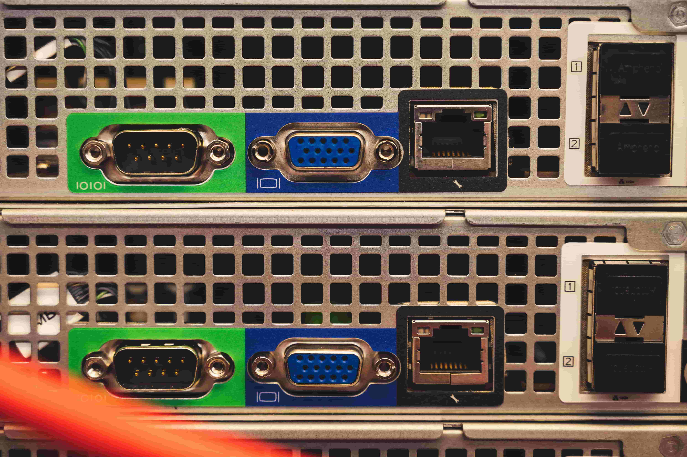
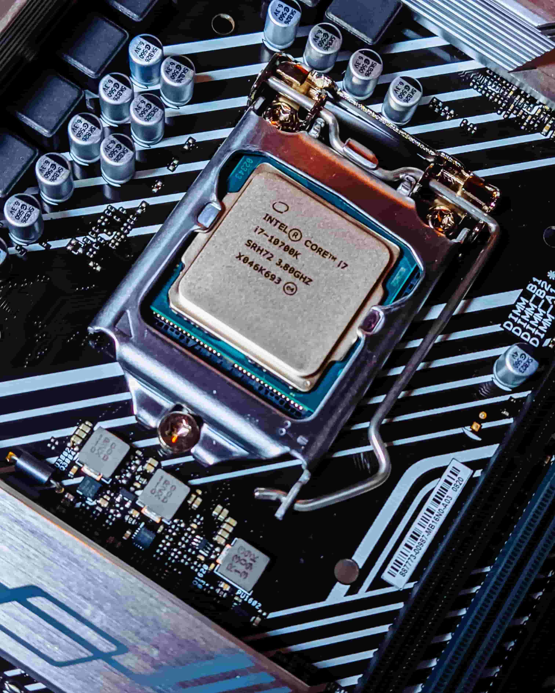
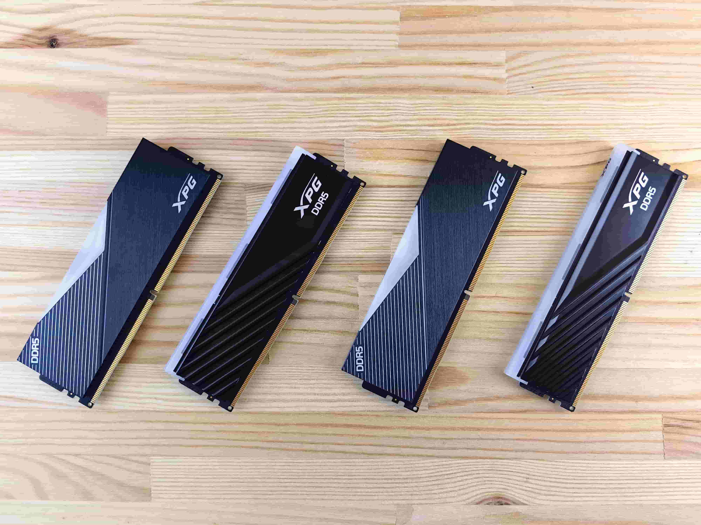
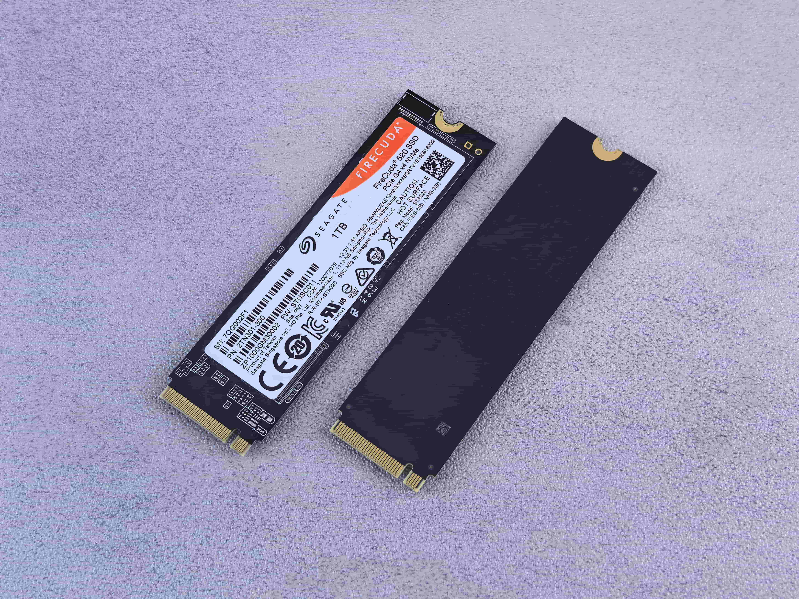
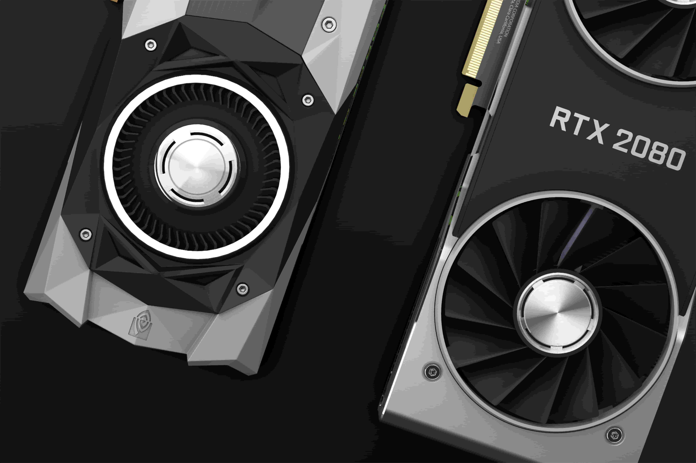

In Chapter 1, we talked about programming. You learned what programming actually means, what binary is, why CPUs don't directly understand languages like Python or C++, and how compilers and interpreters help bridge the gap between human-readable code and the hardware.
But there's one huge thing we haven't properly explored yet: the hardware itself.
You can write the most beautiful program in the world, but eventually that program has to run on a physical machine. That machine has a CPU, memory, storage, a motherboard, a GPU, input and output devices — and underneath all of these are electrical circuits containing billions of tiny transistors.
If you've ever looked inside a computer, you might have seen something like this:
And thought: "Okay... but what does each one actually do?"
Don't worry. We're going to take the machine apart — not physically, of course — and understand what each major part does. And remember our rule: One step, not one kilometer.
Computer hardware is the physical machinery that makes up a computer system. If you can physically touch it, pick it up, connect it, or break it with a hammer, it's probably hardware.
Your laptop, desktop computer, keyboard, mouse, monitor, CPU, RAM, SSD, GPU, and motherboard are all examples of hardware.
Software is different. Software is the collection of instructions and programs that tell the hardware what to do.
Hardware is the physical machine.
Software is the instructions running on that machine.
Neither one is very useful alone. A computer with hardware but no useful software is just an expensive collection of electronics. And software without hardware has nowhere to run.
Imagine you have a video game. The game itself — its code, textures, sounds, levels, characters, and logic — is software. But the computer running the game is hardware.
The game tells the hardware what needs to happen. The hardware performs the operations required to make the game work. That's why you can install the same game on two completely different computers — the software can be the same, but the hardware can be completely different.
When someone says "My computer is slow," they're talking about an entire system. But the computer isn't one single component — it's a collection of components working together.
Think of it like a human body. Your brain performs certain tasks. Your heart performs another. Your lungs perform another. Your eyes gather information. Your hands interact with the outside world. The body works because these different systems cooperate.
A computer works in a similar way. It has different components with different responsibilities:

Open a desktop computer and you'll probably see a large circuit board taking up a significant part of the case. That's the motherboard.
The motherboard is one of the most important pieces of a computer because it provides connections between many of the system's components. Your CPU needs to communicate with memory. Your storage needs to communicate with the rest of the system. USB devices need a way to communicate with the computer. Expansion cards may need connections.
Think of it like a city. The CPU is one important building. RAM is another. Storage is another. The GPU is another. But buildings aren't useful if they're completely isolated. You need roads, electrical infrastructure, communication networks, and connections between them. The motherboard provides much of that infrastructure inside a computer.
A motherboard isn't just a giant piece of plastic. It contains many different components and connections:
And underneath the visible surface are layers of copper traces. These traces form electrical pathways through which signals and power can travel.

Now we reach one of the most famous components in a computer. The CPU, or Central Processing Unit. If you've ever seen computer specifications, you've probably seen names such as Intel Core i5, AMD Ryzen 5, or Apple M-series.
The CPU is responsible for executing instructions. Remember Chapter 1? Your program eventually needs to become instructions that the processor can execute. The CPU repeatedly performs operations according to those instructions. It can:
For example, imagine a program says:
x = 10 y = 20 z = x + y
A human sees this as a simple calculation. The CPU doesn't see "Ah, the programmer wants to add 10 and 20." Instead, the software is ultimately represented in forms the processor's architecture can execute. The processor performs a sequence of low-level operations that eventually produce the required result.
Modern CPUs don't necessarily have just one processing core. They can have multiple. You may have heard terms like 2-core, 4-core, 6-core, 8-core, or 16-core.
A CPU core is an individual processing unit within a processor. Having multiple cores allows a CPU to work on multiple tasks at the same time. Imagine one person trying to do four jobs. Now imagine four people working on those four jobs. The second situation can potentially get much more work done.
More cores ≠ automatically faster at everything. The architecture, clock speed, workload, software, memory system, and many other factors matter.
Another specification you've probably seen is something like 3.5 GHz or 4.8 GHz. This refers to a clock frequency. A CPU has an internal timing system that helps coordinate operations. A frequency of 1 GHz means one billion cycles per second.
"4 GHz CPU is automatically twice as fast as a 2 GHz CPU." — That's not necessarily true. Modern processors can perform different amounts of work per cycle. Their architectures can be different. They can have different cache systems, instruction execution capabilities, numbers of cores, and many other differences.

Imagine you're working at a desk. You have a huge cupboard full of books. That's your long-term storage. But you don't keep walking to the cupboard every five seconds. You take the books you're currently using and put them on your desk. The desk is your temporary workspace.
RAM, or Random Access Memory, is fast temporary memory used by the computer to hold data that programs are actively working with. When you open a program, the computer may load parts of that program and its data into RAM. Why? Because the processor needs fast access to information while the program is running.
You might now be wondering: "If an SSD stores my files, why do we need RAM?"
Because storage and RAM are designed for different purposes. Storage is designed to retain information. RAM is designed as fast working memory.
For example, imagine you have a game installed on your SSD. You launch it. The computer loads the information it needs into memory. The CPU and other components can then work with that information.
SSD → Long-term storage ↓
RAM → Active working data ↓
CPU → Executes instructions
Turn off your computer. Your RAM loses the information it was holding. Turn your computer back on. The RAM starts being used again by the operating system and applications. But your files are still there. Your photos, videos, games, documents, and programs are still stored on your SSD or HDD.
RAM is volatile memory. Storage is designed to retain information even without power.

Your computer needs somewhere to keep information permanently. That's storage. Two traditional categories you'll hear about are:
This difference gives SSDs major advantages in areas such as access time, responsiveness, size, and resistance to mechanical shock. That's why modern computers increasingly use SSDs as their main storage.
Think about a photo on your computer. You see a photograph. But the computer doesn't see it the same way you do. The photograph is represented as digital data. The same applies to music, videos, documents, games, and programs.
At the lowest level, digital information is represented using bits. Remember Chapter 1? 0 and 1.
A photo isn't literally stored as a tiny printed photograph inside your SSD. It's stored as patterns of data that software interprets as an image. The same storage device can contain completely different kinds of information. It doesn't care whether the bits represent a photograph, a Python program, a video, or a game. It's all digital data.

Now let's talk about another processor. The GPU, or Graphics Processing Unit. Originally, GPUs became famous for their ability to process graphics. When you're playing a 3D game, the computer needs to perform enormous numbers of calculations to create the image you see.
A GPU is designed to handle many operations in parallel. That's one reason GPUs are so powerful for graphics. But modern GPUs aren't useful only for games. They are also widely used for workloads such as:
There are different ways a computer can provide graphics processing:
Gaming desktops often use dedicated graphics cards. Laptops can use either integrated graphics, dedicated graphics, or both.
So far we've talked about the computer processing information. But how does information enter the computer? Through input.
An input device allows information or commands to enter a computer system. Examples include:
Now the computer needs a way to communicate results to you. That's output.
Input → information enters
Output → information leaves
We've talked about processors, memory, storage, graphics, and input/output. But none of them work without one thing: power.
A computer needs electrical energy. Desktop computers usually receive power from a Power Supply Unit, or PSU. The PSU converts incoming electrical power into forms suitable for the computer's components. Laptops work differently because they contain batteries and power-management circuitry.
Your computer isn't simply "using electricity." Its components require carefully controlled voltages and currents. And this takes us back to something we discussed in Chapter 1. At the lowest level: computers are physical electrical systems.
There is another problem. Computers perform enormous numbers of operations. Those operations consume energy. Some of that energy ultimately becomes heat. Too much heat can cause problems. So computers need cooling.
You may see fans, heatsinks, heat pipes, thermal interfaces, or liquid cooling systems. A heatsink helps move heat away from a component. A fan can then move air across the heatsink and carry heat away.
So when your laptop fan suddenly sounds like "VVVVVVVVVVVVVVVVVVVVVVVVVV" 😂, it's not necessarily dying. It may simply be trying to get rid of heat.
Your computer isn't isolated. It needs to communicate with external devices. That's where ports come in. You may have seen USB, HDMI, DisplayPort, Ethernet, Audio connectors, and USB-C.
Different ports support different kinds of connections:
A connector shape doesn't always tell you everything the port can do. Two USB-C ports can support very different capabilities.
Imagine you open a game. What happens?
And all of this happens incredibly quickly.
You click your browser. Here's what happens:
And you see your browser. All because a bunch of specialized hardware worked together.
An operating system is software. It sits between applications and much of the underlying hardware. For example, your application doesn't normally need to manually control every electrical signal going into your SSD. Instead, it asks the operating system to perform operations.
You ↓
Application ↓
Operating System ↓
Hardware
Earlier, we looked at hardware as CPU + RAM + Storage + GPU + motherboard. But we can go deeper. Inside a CPU are many smaller structures. Inside those structures are circuits. Inside those circuits are logic gates. Inside those gates are transistors. And transistors are built from semiconductor materials.
That's the fascinating part. The computer sitting on your desk is ultimately built from physical processes. There isn't a tiny person inside the CPU performing your calculations. There are enormous numbers of electronic components interacting according to the laws of physics.
Remember the binary discussion from Chapter 1? We said computers work with 0s and 1s. Now you can understand a little more of what that means.
That's the incredible bridge between the code you type and the physical machine underneath it.
You might ask: "Why don't we just make one giant chip that does everything?"
Actually, modern systems are moving toward increasingly integrated designs. Many modern processors combine things that used to be separate. But specialization still matters. Different components are optimized for different jobs.
The system becomes powerful because these components cooperate. It's like a company. You don't necessarily want one employee doing accounting + programming + design + customer support + shipping + marketing at the same time. Specialized roles can make the whole organization more effective.
Modern processors contain billions of transistors. And those transistors are microscopic. Think about that. Your computer might have billions of tiny electronic switches packed into a chip that can fit in your hand. Those switches work together to implement incredibly complex digital systems.
The fact that we can manufacture this technology at such a scale is one of the greatest engineering achievements in human history.
It can feel like magic. You press a button. A window appears. You type something. Text appears instantly. You launch a game. Millions of calculations happen. You open a website. Your computer communicates with machines potentially thousands of kilometers away.
But none of this violates the rules of physics. It's engineering. Humans have learned how to build extremely complicated systems from relatively simple physical principles. And that's what makes computer science so fascinating.
Take a look at your own computer. Don't just see "Laptop." Try seeing the individual systems. There's a processor. There's memory. There's storage. There's a motherboard. There are input devices. There are output devices. There are communication systems. There is power management. There is cooling.
And underneath all of it: electronic circuits. You are literally sitting in front of a machine containing billions of microscopic components. And you're about to learn how to program it. That's pretty cool.
Before we finish, let's make one distinction clear. A computer doesn't have:
The CPU is important, but performance and capability come from the entire system. A powerful CPU with insufficient memory can still have problems. A powerful GPU can't magically fix a slow storage device. A fast SSD doesn't make a weak CPU suddenly powerful. A computer is a system. The components interact. And the performance you experience depends on how those components work together.
Suppose you create:
name = "Avaneesh" print(name)
You save the file. That file exists as data on your storage. When you run the program, the operating system and Python implementation do work to get the program executing. The required information is loaded into memory. The processor executes the resulting instructions. The computer handles the data. Eventually, the output is sent to the appropriate output system. And you see:
Avaneesh
It looks ridiculously simple. But underneath that simple output is an entire computer system working together.
You don't need to memorize every component and specification. You should understand the big picture.
And underneath all of these: electronic circuits and transistors.
Before moving to the next chapter, see if you can answer these without looking back.
If you can explain these concepts in your own words, you don't need to memorize the chapter.
A computer isn't a magical box. It's a collection of physical systems working together. The programs you write don't float around in some invisible digital world. Eventually, they have to run on real physical hardware.
Your code becomes instructions. Instructions are executed by processors. Processors are built from circuits. Circuits are built from transistors. Transistors operate using physical electrical behavior.
And somehow, from all of that complexity, you get: a game, a browser, a video, a Python program, an operating system, or even an AI model.
That's the machine you're learning to program.
Next Chapter → The CPU
New-To-Dev • Chapter 2 • Built for beginners, by someone who remembers the struggle.
💻 Free forever. No ads. No catch.
© 2026 Avaneesh Shahi. This work is licensed under a Creative Commons Attribution-NonCommercial-NoDerivatives 4.0 International License.
Some images are sourced from the internet for educational purposes only. If you are the copyright owner and wish to have them removed or properly credited, please contact us at avaneeshaternos@gmail.com